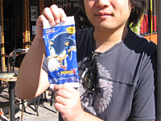

「スタジオＵＳＡ」現地の様子をレポート！
みなさんこんにちは！
スタジオUSA在勤の瀬上です。
サンフランシスコは、緯度でいうと日本の宮城県あたりと同じくらいに
位置しているんだけど、殆どの家にはクーラーがありません。
どうしようもなく暑い！という日は数えるくらいしか無く、
夏も涼しめで、過ごしやすい街なのでクーラーも必要ないんですね。
気温が低くなったり雨が続いたりして、秋がやってきたなーと思っていると
一転して抜けるような秋晴れと共に、暑い日が続くことがあります。
アメリカの先住民が本格的な冬を迎える前に冬支度をする時期という意味合いから
インディアンサマーと呼ばれていますが、ちょうど今（10月下旬）が正にそれ。
そんな日は、外でアイスクリームでも食べたくなるというもの！
第4号で文中では触れたけど、
紹介をしそびれていたソニックのアイスを
探しに行くのにはうってつけの陽気です！
ということで、ミッションストリートにランチがてら行ってみました。
ここは市内の目抜き通りの一つで、店も人通りも多く賑わっていて
アイス売りもいっぱい練り歩いているところなんです。
この手のアイスは「チリンチャリ～ン！」と鈴を鳴らしながら
売り歩いているアイス売りから買うのが良いですねー。
彼らは車輪が付いたクーラーボックスを押しながらアイスを売り歩いて
いるんだけど、人によって扱っているアイスが違ったりします。
特にキャラクターものを探している場合は、クーラーボックスの周りに
ベタベタと貼られている絵をよく確認するべし！
お、ちょうどソニックのアイスを持っているアイス売りが来たので
呼び止めてみました。
ソニックのアイスはアメリカの子供向けの風味では、
チェリーと人気を二分する「ブルーラズベリー」フレーバー！
この手のアイスでは「目はガム」と相場が決まっていますが…
「うわっ！」開けてみてビックリ！
どんなところに目が付いとるんじゃーっ！
これじゃ、正月の福笑い状態じゃないですか！（笑）
アイス売りは、その他だと大きな公園のそばなど、
やはり子供が多く集まるところで商売しています。
アメリカに行く機会があったら、是非探してみてね。
ところで、子供に人気といえば、ファストフードの子供向けのセット！
2003年と2004年にはアメリカを始めとする世界各国の
マクドナルドのハッピーミールで、ソニックの携帯ゲームの
キャンペーンをやったことは知っている人もいるかもね。
最初の年は、5種類のソニックのミニ電子ゲーム機があったんだけど
（全体としてはモンキーボールを含めた6種類）
この手のLCDゲーム機をハッピーミールに
採用したのは最初のケースだったんだよ！
そういうこともあってか大好評で、
マクドナルドのハッピーミールキャンペーンの中で
最も成功したものの一つなんだって！
本体の写真は見たことがある人もいると思うので、箱や袋の写真でも撮ってみようかな！
さて、今回は僕たちスタジオUSAが
制作監修に関わったハッピーミールトイの中でも
とびきりレアなものを紹介しちゃいます。
じゃじゃーん！
これらは2004年の夏頃に南米向けに作ったものです。
このセットにしか入ってないものもあるんだよ！
今回の「スタジオＵＳＡ通信」はここまで。
また次回も、アメリカならではの情報をお届けするのでお楽しみに！
 プロフィール：
プロフィール：
瀬上 純（せのうえ じゅん）
SEGAのサウンドクリエイター。
代表作は『ソニックアドベンチャー』シリーズ、
『ソニックヒーローズ』、『シャドウ・ザ・ヘッジホッグ』など。
最新作、『ソニックと暗黒の騎士』ではサウンドディレクターを務めた。
その他の参加作品には、『ナイツ ～星降る夜の物語～』、『プロ野球チームをつくろう！2』など。